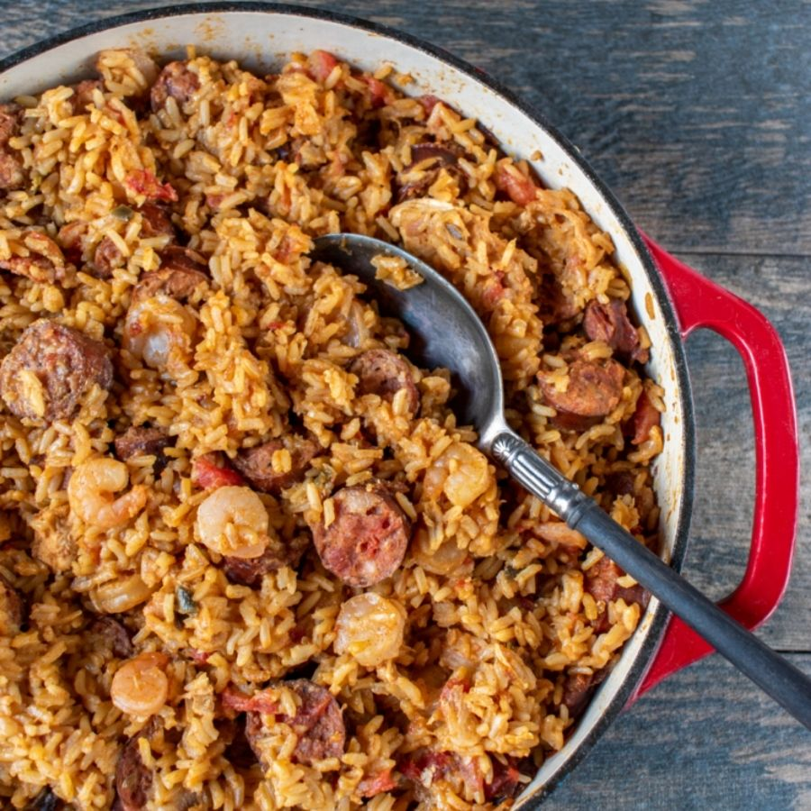

Jambalaya

Description
Jambalaya is a hearty one-pot meal with deep roots in Southern Louisiana. Enslaved Western and Central Africans were thought to be the first to make this dish, using indigenous red rice that was brought to the Americas from colonialized lands. These cooks would use the meats, vegetables, and spices that were available to them to create this delicious dish.
While jambalaya can sometimes be similar in flavor to gumbo, it has a different texture and uses different cooking techniques. Gumbo is usually saucy and served spooned over rice, and jambalaya is more like paella, where the rice is cooked in the same pot with broth and other ingredients soaking up most of that liquid. Jambalaya recipes also vary slightly depending on whether they are historically Cajun or Creole in origin. Learn how to make this Cajun jambalaya recipe, plus what sets the two apart.
Ingredients
- 3 tablespoons of veggie oil
- 1 1/4 pounds boneless skinless chicken thighs cut into 1 1/2 inch pieces
- cajun seasoning
- 1 pound smoked sausage, thinly sliced
- 1 pound pork loin, cut into 1 1/2 inch pieces
- 2 yellow onions, diced
- 1 green bell pepper, diced
- 1 red bell pepper, diced
- 3 sticks of cellery, diced
- garlic powder
- 1 tablespoon werstershire sauce
- 1 tablespoon piccapepper sauce
- 2 tablespoons louisiana Hot sauce
- 3 beef boulion cubes
- 1 32 oz container of beef broth
- 4 cups of water
- 4 cups of rice, rinsed and drained
- 1 bunch of green onions
Steps
- Heat a large heavy bottom pot on medium high heat.
- season your pork and chicken with cajun seasoning and garlic powder.
- add smoked sausage to the heated oil in the pot. cook until all sides are browned, and remove with a slotted spoon.
- add pork and brown on all sides. Remove with a slotted spoon.
- add chicken brown just like the pork. remove with a slotted spoon.
- add onion, bellpeppers, and cellery to the pot. cook for about 45 minutes so that the veggies have time to get soft and loosen up everything on the bottom of the pot.
- add sausage, pork and chicken back to the pot along with any drippings. Add the boulion cubes, werstershire sauce, piccapepper sauce, louisiana hot sauce, beef broth and water.
- Bring to boil and add the uncooked rice.
- bring back to a boil and put the lid on top. lower heat to a simmer and let cook for about 45 minutes
- turn fire off and let sit covered for about 5 more minutes
- fluff with a fork and add chocked green onions and stir.
- Enjoy